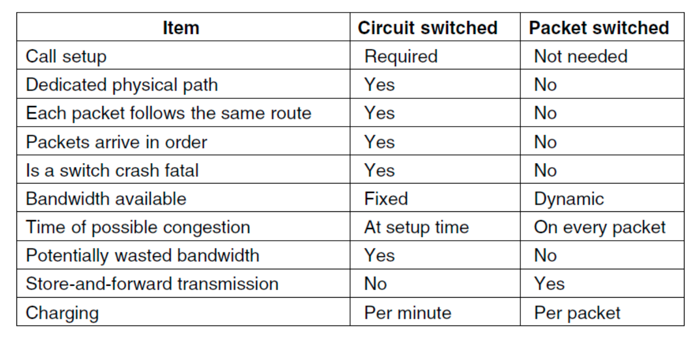

The Physical Layer¶
- 协议模型的最底层，是网络的基础
- 定义了 bits 在 channels 中传输的电路、时间以及其他接口
- 不同物理通道的表现: throughput, latancy(delay), error rate
Theoretical Basis¶
Bandwidth-limited Signals¶
信号传输过程中会出现损失而导致失真。通常，频率从 \(0\) 到 \(f_c\) （截止频率 cutoff frequency，与传输介质有关，单位为 cycles/second 或 Hz）几乎没有损失。
Definition
在传输过程中未遭受强烈衰减的频率范围的宽度称为带宽(Bandwidth)。
- Baseband Signals: 频率范围从0到最大值的信号
- Passband Signals: 信号经过频移处理以占据更高频率范围的信号
Maximum Data Rate¶
Definition
在特定条件下，数据通过特定通信路径或信道传输的最高速率称为 Channel Capacity (bits/sec)
Note
Bandwidth是模拟信号下的量化，Maximum Data Rate是数字信号下的量化。
Four Related Concepts¶
- Data Rate (bps): 如果binary-input和binary-ouput都没有噪声，则data rate为1bps。
- Bandwidth: 传输介质的物理性质。
- Noise
- Error Rate: error指发送了1却接收了0或反之。
Nyquist Bandwidth¶
- 对于bandwidth为 \(B\) 的通道，最优脉冲波形为: \(g(t)=\frac{\sin2\pi Bt}{2\pi Bt}\)
Theorem
假设每个采样点可以获取 \(V\) 个不同的值，即每个采样点有 \(\log_2V\) bits的信息，通道的bandwidth为 \(B\)，则 maxmimun bit rate 为 $$ C=2B\log_2V \text{ (bits/s)} $$
Shannon Capacity¶
Theorem
对于一个 bandlimited additive white Gaussian noise(AWGN) 的通道，有Shannon Capacity，即理论最大可靠数据传输率： $$ C=B\log_2(1+SNR) $$ 其中 SNR = signal-to-noise ratio （线性规模，不是 \(dB\)），转换公式如下： $$ SNR_{dB} = 10\log_{10}(SNR) $$
对于高 SNR : \(\text{capacity} \approx B\log_2(SNR)\) ， 大带宽提高capacity
对于低 SNR : 即 \(SNR << 1,\ln(1+x)\approx x,\) \(C=\frac{B}{\ln2}\centerdot \frac{S}{N}=\frac{B}{\ln2}\centerdot \frac{P}{N_0B}=\frac{B}{N_0\ln2}\) （\(N_0\) 为 single-sided noise power spectral density(PSD)，\(P\) 为 signal power）
Transmission Media¶
Guided Transmission Media¶
Persistent Storage¶
包括磁盘和固态存储等，是传统的数据传输方式。
- 在需求高数据传输速率或低开销是有成本效益
- 传输延迟大
Twisted Pairs¶

双绞线，通过一对线之间的电压差来传出数据（由于噪声会同时影响两条线，取差可以对噪声起到一定的免疫作用）。
双绞线既可以传输数字信号，也可以传输模拟信号。
带宽取决于线的厚度和传输距离，通常在几公里内可以达到 Megabits/sec 级别。
不同LAN标准中可能对双绞线的使用不同。
- Full duplex links: 1-Gbps Ethernet，四对线向同一方向传输
- Half duplex links: 100-Mbps Ethernet，两对线各朝一个方向传输
- Simplex links: 单向通道
UTP: Unshielded Twisted Pair (非屏蔽双绞线)
Coaxial Cable¶
通常用于有线电视和城域网(MAN)。
现代电缆带宽可以达到 GHz 级。
Power Lines¶
把信号叠加到低频的电信号上。
- 不同房屋的电线电气特性各异，且随电器开关状态变化，导致数据信号在线路中反复反射。
- 电器开关时的瞬态电流会在宽频段范围内产生电气噪声。
Fiber Optics¶

光纤本质上允许无限大的带宽，但是必须考虑成本。
通常被用于网络骨干的长途传输、高速LAN、高速Internet。
关键组成部分有 light source, transmission medium 和 detector
最常用的波段为 0.85, 1.30, 1.55\(\mu m\) 附近。
优点
- 更高的带宽
- 不受电源浪涌、电磁干扰、断电及腐蚀性化学物质影响
- 纤薄轻巧
- 不泄漏光信号
- 难以窃听(tap)
缺点
- 技术门槛较高，需专业工程技能
- 过度弯折易导致光纤损伤
Wireless¶
Spectrum allocation

- ISM频段和U-NII（非授权国家信息基础设施）频段在美国由无线设备使用。
- 5 GHz频段相对未开发，但因其拥有最大带宽，且被802.11ac等WiFi标准采用。
Radio Transmission（无线电传播）¶
Radio frequency(RF) 波易于产生，可长距离传播，易穿透建筑物，广泛用于室内外通信。
无线电波具有全向性，对发射器和接收器没有严格要求。
无线电波的特性取决于频率
- 低频穿透能力强，但是功率衰减剧烈，在空气中衰减速率至少达到 \(1/r^2\)，这种现象为 path loss。
- 高频倾向于直线传播并在障碍物反射。
Note
光纤、同轴电缆和双绞线，信号每单位距离衰减的幅度相同，例如双绞线每100米衰减20dB。而无线电信号的衰减幅度随距离翻倍而保持不变。 这种特性意味着无线电波能够远距离传播，但用户间的干扰成为主要问题。
Microwave Transmission¶
100MHz以上，接近直线传播。
能量集中，波束小，要求发射天线和接收天线必须对准。
受地面障碍物影响，需要中继站，间距大致与基站高度平方根成正比。
- multipath fading: 延迟波与直达波产生相位差导致信号抵消。
Infrared Transmission（红外传播）¶
具有相对定向性，成本低易制造，但无法穿透固态物体。
操作红外不需要政府许可。
Light Transmission¶
光传输无需政府许可。
风、温度、雾等会干扰激光通信系统。
Satellites¶
- The principal satellite bands
| Band | Downlink | Uplink | Bandwidth | Problems |
|---|---|---|---|---|
| L | 1.5 GHz | 1.6 GHz | 15 MHz | Low bandwidth; crowded |
| S | 1.9 GHz | 2.2 GHz | 70 MHz | Low bandwidth; crowded |
| C | 4.0 GHz | 6.0 GHz | 500 MHz | Terrestrial interference |
| Ku | 11 GHz | 14 GHz | 500 MHz | Rain |
| Ka | 20 GHz | 30 GHz | 3500 MHz | Rain, equipment cost |
MEO¶
Medium-Earth Orbit 卫星，高度位于两个 Van Allen belts 之间
- 经度方向缓慢移动（绕地球一周需6小时）
- 需要追踪其天空轨迹
- 地面覆盖范围较小
- 覆盖所需发射器功率低
用于导航系统
LEO¶
Low-Earth Orbit 卫星


卫星通信相比于光纤通信的优势
- 快速部署能力
- 适用于地面基础设施欠发达地区的通信需求
- 满足关键广播传输需求
NOTE
一些传输损伤(impairments):
- Multpath fading：不同路径的信号相互叠加干扰，无线独有。
- Crosstalk：相邻电线间的电磁干扰，有线独有。
- Thermal Noise：导体中电子的热运动产生的噪声，无法避免，两者都有。
- Different Fourier components propagating at different speed：有线独有。
Digital modulation and multiplexing¶
Definition
Bits 与其对应信号之间的转换过程称为数字调制(digital modulation)。
将 Bits 转换为信号主要有两种方案：
- Baseband transmission(有线通道): 信号频率范围从零起始，上限取决于传输速率
- Passband transmission(无线和光通信通道): 通过调节载波信号的振幅、相位和频率来传递比特。（信号占据载波频率周边的频带）
Definition
通过单根导线传输多路信号称为多路复用(Mutiplexing)
Baseband Transmission¶
- NRZ: 正电压/有光表示1，负电压/无光表示0。由于传输过程中的衰减可能会产生失真，接受端会将信号映射到近似值。信号每2bits可能会中正负切换，因此需要 bit rate 为 \(B\) 时至少需要 \(B/2\) Hz 的频率，即需满足Nyquist Bandwidth，\(C=2B\log_2V\)。
Supplyment
可以使用更高的信号级别来突破带宽限制（如2位信号）但是接收端需要有足够的识别能力。此时 Bit rate = Symbol rate \(\times\) the number of bits per symbol (Baud rate = Symbol rate)。
Supplyment
NRZ存在时钟信号问题，即双方可能不同步。如果一直是0或1那过一段之间后就可能出现错位。可以通过单独发送时钟信号或与时钟信号XOR后发送来解决。
- Manchester Encoding: 用从低到高的转换表示0，从高到低的转换表示1。如图所示与时钟信号进行 XOR 操作可以转换回01序列，解决时钟信号问题，但是带宽开销增大一倍。 （很多Ethernet技术使用Manchester encoding）
- NRZI: 信号转变表示1，信号不变表示0。（USB标准使用NRZI）
- Scrambling: 在发送数据之前，用一个伪随机序列对信号进行XOR。不能保证完全不会出现一长串0或1，但减小出现的概率。
- Balanced signals: 即使在短时间里，正负电压也均等分布的信号。（平均值为0，没有直流分量）避免了某些通道由于物理特性而导致的直流分量强烈衰减。可以通过电容耦合(capacitive coupling) 来实现只通过交流分量。
- bipolar encoding: 使用正负两个电极来表示1（比如+1V和-1V），使用0V来表示0。这是一种balanced signals 的直接构造方式。
Passband Transmission¶
通过调节信号的振幅、相位、频率来满足在任意频率传输信号（比如把带宽在 \(0\) 到 \(B\) Hz 的信号调节到 \(S\) 到 \(S\)+\(B\) Hz 来传输）
- ASK (Amplitude Shift Keying): 用两个不同的振幅来表示0和1（或更多位）。
- FSK (Frequency Shift Keying): 用不同的频率来表示码元。
- PSK (Phase Shift Keying): 将信号偏移一定相位来表示信号。如BPSK (Binary PSK): 使用0和180度表示1位信号；QPSK (Quadrature PSK): 用45, 135, 225和315度表示2位信号。
可以结合几种方法让每个码元表示更多bits，如 constellation diagram

如图使用不同相位来表示不同信号，位于同一条直线上的用不同振幅来表示。可以使用 Gray Code 来减少噪声带来的影响。

FDM¶
Frequency Division Multiplexing。通过调制让不同的用户占据不同的频段，每个频段之间保持一定间距来防止互相干扰。

OFDM¶
Orthogonal FDM。信道带宽被划分为多个子载波，这些子载波独立传输数据。每个子载波的频率响应经过设计，使其在相邻子载波中心处为零。为实现这一目标，需要设置保护间隔，在时间上重复部分符号信号，从而获得所需的频率响应特性。
TDM¶
Time Division Multiplexing。每个用户可以在不同时间段占用整个带宽。需要添加guard time。

CDM¶
code Division Multiplexing。把信号拓展到更宽的频段上，可以每一个station传输时信号都一直占满整个频段。
在 CDMA 中，每一个bit time被分成了\(m\)个 chips。通常每个bit有64或128个chips，每个station有自己独特的序列—Walsh codes。可以使每个sation的速率从 \(b\) bits/s提升到 \(mb\) bits/s，但是需要 \(m\) 倍多带宽。（需要假设所有chips在接收端的时间是同步的）
- (a) chip sequences
- (b) chip sequences的信号表示
- © 六个传输序列的例子
- (d) C信号的恢复
多个chip sequences需要满足正交，在实际使用中需要让两个向量的点积绝对值尽量小。
Communication Examples¶
PSTN¶
Public Switch Telephone Network。


电话系统通常由三个主要部分组成：
- Local loops: telephone modem, ADSL, fiber
- Trunks(连接长途电话局的数字光纤链路): 主要考虑问题是多路复用(FDM和TDM)
- Switching offices(呼叫中不同trunk的转移):
Local Loop¶
Telephone modems¶
调制解调器，用于比特流和模拟信号之间的转换。
Theorem
若采样频率达到原始频率的两倍，则不会产生Aliasing—— the Nyquist Sampling Limit。和带宽共同约束 baud rate 的上现。

Digital Subscriber Lines¶
电话用于传输人声，因此只需要传输300Hz到3400Hz(通常使用4000Hz)的信号。而本地环路的物理性质可以支持大约1MHz，通过DSL可以充分利用带宽。
可以把可用的1.1MHz分成256个独立的大约为4kHz的通道，对这些通道使用 OFDM（中ADSL语境下通常叫做DMT (Dicrete MultiTone)）。其中 Channel 0 用于 POTS(Plain Old Telephone Service )，Channel 1-5 用于防止信号之间的互相干扰。剩下的250个通道中1个用于 upstream control，一个用于 downstream control，其余用于用户数据。

- 国际 ADSL 标准中: 8Mps downstream, 1Mbps upstream
- 第二代 ADSL 标准中: 12Mps downstream, 1Mbps upstream
- ADSL2+: 通过双绞线将带宽提升至2.2MHz，以此将downstream提升至24Mbps

Fiber to the Home¶
提供更快速、更优质的网络服务。通常将来自多户住宅的光纤汇聚，形成每百户共用单根光纤连接本地交换局。
- 下行方向采用光分路器将本地交换局信号分发至所有用户。若需限定特定用户解码信号，则需实施加密措施。
- 上行方向中，光合波器将各户信号汇聚为单一信号传输至终端办公室。
PON(Passive Optical Network): 通常采用一种波长用于所有用户户内的下行传输，另一种波长用于上行传输。

Trunks¶
相比local loops更快，而且有以下不同：
- 电话网络的核心传输数字信号而非模拟信号
- trunks同时承载大量通话，通常使用 TDM 和 FDM。（SONET: 光纤通信采用的TDM；wavelength division multiplexing: 光纤通信中的FDM）
根据Nyquist Theorem，对带宽为4kHz的电话信号需要进行8000Hz的采样，然后将个样本分为8个bits，这种标准为 PCM，此时满足：
- Data rate = 8000 samples/sec = 64 kbps
- Sample rate = 125 µsec/sample
TDM¶
- T1/E1
| 特性 | T1 (北美/日本) | E1 (欧洲/国际) |
|---|---|---|
| 总速率 | 1.544 Mbps | 2.048 Mbps |
| 通道数 | 24 × 64 kbps | 32 × 64 kbps |
| 帧结构 | 193 bit/帧 | 256 bit/帧 |
| 结构 | 每1帧由 24 channels ×8 bits 数据和 1 bit 的 framing code 组成 | 32个通道中 TS0 用于控制/帧同步，TS16 用于电话呼叫控制，其余 30 个用于数据 |
可以通过多层叠加达到更快的速率：
- SONET(Synchronous Optics NETwork): 基本SONET帧为810bytes数据块，每125µs输出一次。810bytes可以视为90列\(\times\)9行的矩阵。data rate = \(810\times 8\times 8000=51.84\text{Mbps}\)。此布局构成基础SONET通道，称为STS-1，所有SONET trunks都是STS-1的倍数。

WDM¶
Wave-length Division Multiplexing

Switching¶
- Circut Switching: 一旦建立连接，双方之间便存在一条专用的物理路径，该路径将持续存在直至通话结束。传输数据前必须建立端到端路径。
- Packet Switching: 无需预先建立专用路径。路由器采用 store-and-forward 的方式来传输每个packet到指定目的地。存在排队延迟与拥塞问题。



Cellular Networks¶
GSM¶
Global System for Mobile Communications。
- SIM card: Subscriber Identity Module
- VLR: Visitor Location Register
- HLR: Home Location Regirter
CDMA¶
- Soft handoff
Cable Networks¶
HFC¶
Hybrid Fiber-Coax cable network.

The fixed telephone system¶
HFC中很多houses共享一根cable，而the telephone syetem里每个house都有自己独立的local loop。